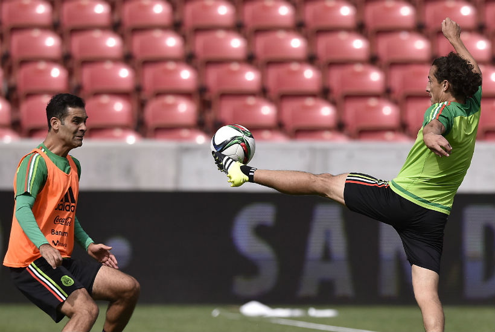

Rafa Márquez y Guardado sí llegarian vs. EU
Comienzan las filtraciones y las adivinanzas en torno a la lista que mandará Ricardo Ferretti para enfrentar a Estados Unidos el 10 de octubre. Las novedades: Rafa Márquez y Andrés Guardado sí estarían llamados para el partido pese a sus respectivas lesiones.
Además, como ya se especulaba, Carlos Vela estaría fuera para la siguiente convocatoria, por decisión del Tuca, tal y como fue el caso hace un mes para los partidos con Giovani dos Santos, Jonathan dos Santos y Guillermo Ochoa.
Esos tres tienen el “castigo” levantado, y volverían a estar disponibles para vestir la camiseta del Tri en Los Ángeles ante la Selección de Estados Unidos. Además, los lesionados Rafa Márquez y Andrés Guardado, sin garantía de que estén recuperados en su totalidad, son apuestas de Ferretti para el partido definitivo.